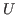
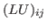
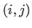
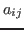
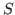
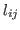
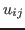

An incomplete LU (ILU) factorization is generally computed by a
Gaussian elimination process where certain nonzeros are
neglected in some way. Here, we present a completely different method
for computing ILU factorizations. The new method is iterative in
nature and is highly parallel. Given a matrix  , the new method
computes the incomplete factors
, the new method
computes the incomplete factors  and
and

by using the property
denotes the
entry of the product
denotes the entry of
denotes a set of matrix locations where nonzeros are allowed. In other words, the factorization is exact on the sparsity pattern . The precursors to ILU methods in separate works by Buleev, Oliphant, and Varga in the early 1960's constructed matrix factorizations in a similar fashion, much before they were recognized as a form of Gaussian elimination.The new method interprets an ILU factorization as, instead of a Gaussian elimination process, a problem of computing the unknowns

and
, which are the entries ofThe constraint equations may be solved via a fixed-point iteration, or a parallel asynchronous iteration in the parallel setting. We will present theoretical and experimental results on the convergence of these methods for computing ILU factorizations. The fact that the method is iterative means that the exact ILU factorization does not need to be computed, and we show experimentally that roughly converged iterations produce factorizations that are very effective preconditioners. Furthermore, the number of iterations required is typically very small (less than 5), especially when good initial guesses for the ILU factorization are available, such as in the case when solving a sequence of related linear systems. We can also interpret the new method as a way of updating an existing ILU preconditioner.